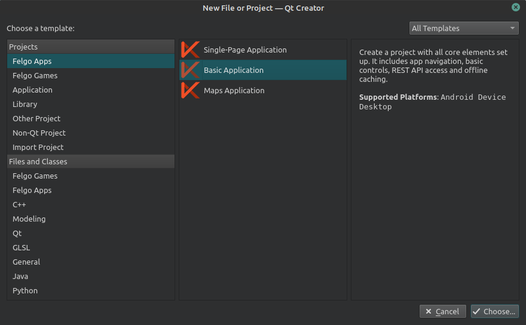
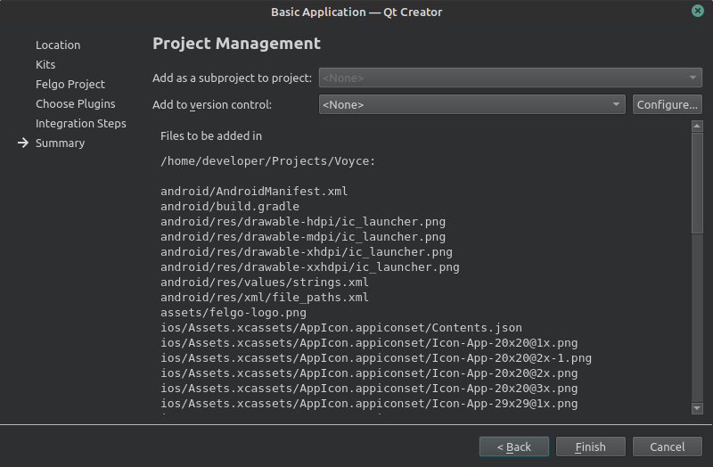

Creating new project
Once we got opened QtCreator, from the main application menu, we select: File -> New File or Project. The following Window is opened:

From the options we can see that Felgo SDK provides ready templates for applications and games. We are going to choose Basic Application option. After clicking Choose, we are navigated to new window, which allows us to set name of the application and its location:

Clicking Next and we are presented with the Kit Selection options window. From the provided options, we select the Felgo Desktop, and one of the options for Android.
Note: Android for armeabi-v7a - is kit for a real Android device - You will need this, you want to run the app on physical device
Note: Android for x86 - is kit for a Android emulator - I will choose this one for this tutorial

Going forward, and we are allowed to set basic properties for the project.

After that, we can select which Felgo Plugins we want to use.

Note: We will not use any plugins at this stage!
The next screen for Felgo Plugin Integration Steps can be skipped, since we have no selected any plugins, and it's empty.
Finally, as a last step, window with summary of the project details is presented.

Clicking Finish automatically loads the new project, starts Felgo Live Server and Felgo Live Client, and run the application.

Next steps
We've successfuly set up and ran the basic application. Next, we will see what the Felgo SDK generated for us, and what we are going to update in order to have the initial base for our Voyce app.